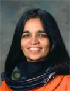

Lyndon B. Johnson Space Center
Houston, Texas 77058
|
National Aeronautics and Space Administration Lyndon B. Johnson Space Center Houston, Texas 77058 |
 |
Biographical Data |
||
KALPANA CHAWLA (PH.D.)
NASA ASTRONAUT (DECEASED)
PERSONAL DATA: Born in Karnal, India. Died on February 1, 2003 over the southern United States when Space Shuttle Columbia and the crew perished during entry, 16 minutes prior to scheduled landing. She is survived by her husband. Kalpana Chawla enjoyed flying, hiking, back-packing, and reading. She held a Certificated Flight Instructor's license with airplane and glider ratings, Commercial Pilot's licenses for single- and multi-engine land and seaplanes, and Gliders, and instrument rating for airplanes. She enjoyed flying aerobatics and tail-wheel airplanes.
EDUCATION: Graduated from Tagore School, Karnal, India, in 1976. Bachelor of science degree in aeronautical engineering from Punjab Engineering College, India, 1982. Master of science degree in aerospace engineering from University of Texas, 1984. Doctorate of philosophy in aerospace engineering from University of Colorado, 1988.
AWARDS: Posthumously awarded the Congressional Space Medal of Honor, the NASA Space Flight Medal, and the NASA Distinguished Service Medal.
EXPERIENCE: In 1988, Kalpana Chawla started work at NASA Ames Research Center in the area of powered-lift computational fluid dynamics. Her research concentrated on simulation of complex air flows encountered around aircraft such as the Harrier in "ground-effect." Following completion of this project she supported research in mapping of flow solvers to parallel computers, and testing of these solvers by carrying out powered lift computations. In 1993 Kalpana Chawla joined Overset Methods Inc., Los Altos, California, as Vice President and Research Scientist to form a team with other researchers specializing in simulation of moving multiple body problems. She was responsible for development and implementation of efficient techniques to perform aerodynamic optimization. Results of various projects that Kalpana Chawla participated in are documented in technical conference papers and journals.
NASA EXPERIENCE: Selected by NASA in December 1994, Kalpana Chawla reported to the Johnson Space Center in March 1995 as an astronaut candidate in the 15th Group of Astronauts. After completing a year of training and evaluation, she was assigned as crew representative to work technical issues for the Astronaut Office EVA/Robotics and Computer Branches. Her assignments included work on development of Robotic Situational Awareness Displays and testing space shuttle control software in the Shuttle Avionics Integration Laboratory. In November, 1996, Kalpana Chawla was assigned as mission specialist and prime robotic arm operator on STS-87. In January 1998, she was assigned as crew representative for shuttle and station flight crew equipment, and subsequently served as lead for Astronaut Offices Crew Systems and Habitability section. She flew on STS-87 (1997) and STS-107 (2003), logging 30 days, 14 hours and 54 minutes in space.
SPACE FLIGHT EXPERIENCE: STS-87 Columbia (November 19 to December 5, 1997). STS-87 was the fourth U.S Microgravity Payload flight and focused on experiments designed to study how the weightless environment of space affects various physical processes, and on observations of the Sun's outer atmospheric layers. Two members of the crew performed an EVA (spacewalk) which featured the manual capture of a Spartan satellite, in addition to testing EVA tools and procedures for future Space Station assembly. STS-87 made 252 orbits of the Earth, traveling 6.5 million miles in in 376 hours and 34 minutes.
STS-107 Columbia (January 16 to February 1, 2003). The 16-day flight was a dedicated science and research mission. Working 24 hours a day, in two alternating shifts, the crew successfully conducted approximately 80 experiments. The STS-107 mission ended abruptly on February 1, 2003 when Space Shuttle Columbia and the crew perished during entry, 16 minutes prior to scheduled landing.
MAY 2004